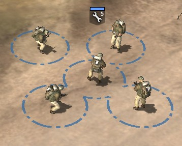

The folders Where are the unit stat files?
Once you've loaded up your mod, the unit stat files are in the attrib\attrib folder. The racebps folder contains certain details about the allies and the axis;commander tree abilities, starting units, etc. The sbps\races folder contains information on squads; what & how many units in them, veterancy effects, etc. The ebps\races folder has information on the actual squad members; HP, which weapons they have, abilities, etc. Remember, every ingame unit is a squad: a sherman ingame is infact a sherman squad with just one unit in it.
Your first edit 5 man engineer squads? Why not?
Find the folder attrib\ attrib\ spbs\ races\ allies\ soldiers. The file for engineers is engineer_infantry.rgd, so double click on that file to start editing it. On the left half of the screen will appear the RGD editor. You should see a tree which begins with GameData and has various squad_something_ext in it. We want to change the number of units in the squad, which is contained within squad_loadout_ext. Find and click on squad_loadout_ext\ unit_list\ unit_01. On the right of the screen you change the values within unit_01. "max" is the maximum number of units in the squad, and "num" is how many a squad begins with. Change max to 6 and num to 5. To save the changes, press the Save button in the bottom right hand side of the screen.
Play CoH with your changes
Go to the Play menu at the top of the screen, and tick "Play in dev mode". Go back to the Plat menu again, and press Play in CoH.

Conslusion
You now know the basics of modding and how to use the tool. If you want to continue some RGD editing, then tweak some values and see what happens. For guidance on how to do certain tasks (both RGD related, and non-RGD related), you can now look through the
tutorials. If you are in need of help, then the Relicnews
CoH modding forum is the best place to go.
This documentation is provided under the GNU General Public License. All trademarks / copyrights are tm/r/c their respective owners.